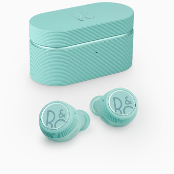

PLAY EX Desde $999

PLAY EQ Desde $800

PLAY E8 SPORT Desde $900
Sonido emocionante de alta resolución en un equipo pequeño. Cómodamente colocados dentro o justo en la entrada del canal auditivo, estos auriculares intraurales proporcionan un sonido rico y auténtico. Reduce el ruido de fondo con la cancelación pasiva de ruidos o desconecta todo lo que te rodea con la cancelación activa de ruidos. Siente la libertad de moverte con auriculares inalámbricos que se ajustan de forma segura, te muevas lo que te muevas. Nuestros auriculares intraurales compactos ofrecen un sonido excelente, lo que los convierte en un compañero de viaje ideal.
PLAY EX Desde $999
PLAY EQ Desde $800
PLAY E8 SPORT Desde $900